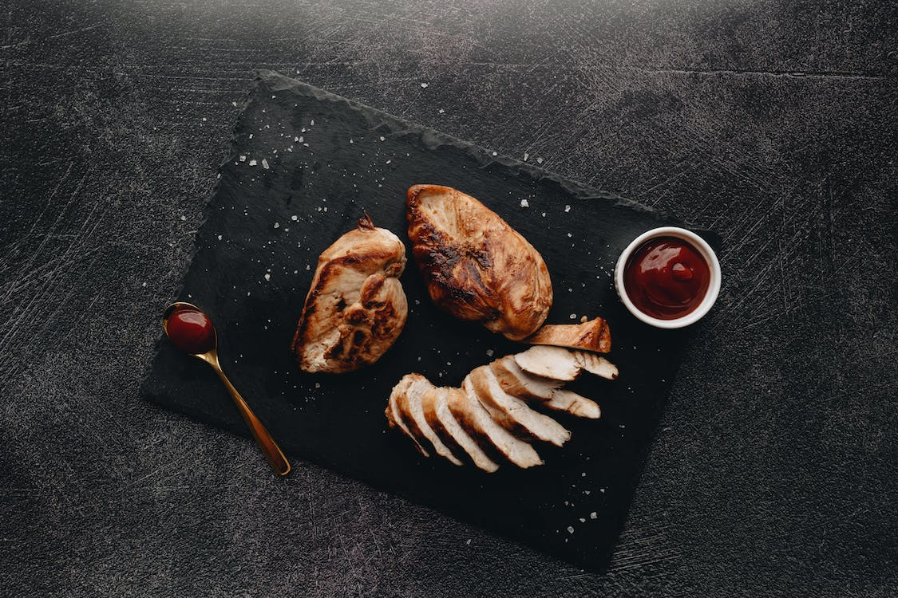

Simple Baked Chicken Breasts

Picture credit: alleksana
Description
Learn how to bake chicken that's tender, juicy, and perfect every time with this simple, 5-ingredient recipe for boneless, skinless chicken breasts. Adding just a bit of chicken broth to those beautiful pan drippings creates a tasty pan sauce that adds extra flavor at the table.
Everyone needs a tried-and-true recipe for simple baked chicken in their back pocket. On the hunt for the perfect one? We've got you covered with this top-rated recipe for baked chicken breasts. It's versatile, universally crowd-pleasing, and (best of all) incredibly easy.
Ingredients
- 4 (5 ounce) skinless, boneless chicken breast halves
- 2 tablespoons olive oil
- ½ teaspoon coarse sea salt, or to taste
- 1 pinch Creole seasoning (such as Tony Chachere's®), or more to taste
- 1 (28 ounce) can crushed tomatoes
Steps
- Gather all ingredients.
- Preheat the oven to 400 degrees F (200 degrees C).
- Rub chicken breasts with olive oil and sprinkle both sides with salt and Creole seasoning. Place chicken in a broiler pan.
- Remove chicken to a plate.
- Pour chicken broth into the pan and scrape any browned bits off the bottom with a flat-edged wooden spatula. Add more broth if needed to dislodge the browned bits, but not too much or it will be watery.Pour chicken broth into the pan and scrape any browned bits off the bottom with a flat-edged wooden spatula. Add more broth if needed to dislodge the browned bits, but not too much or it will be watery.
- To serve, drizzle the pan sauce over the chicken.
Recipe